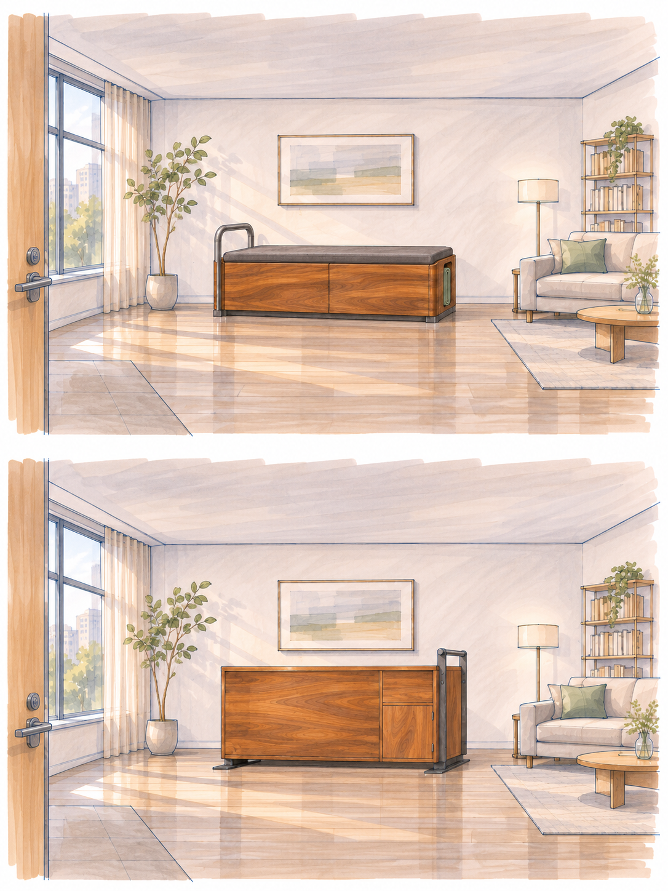
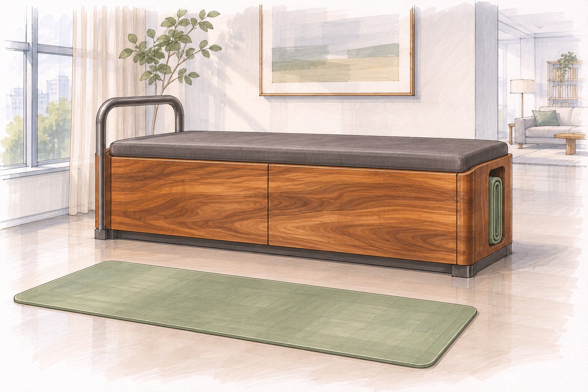
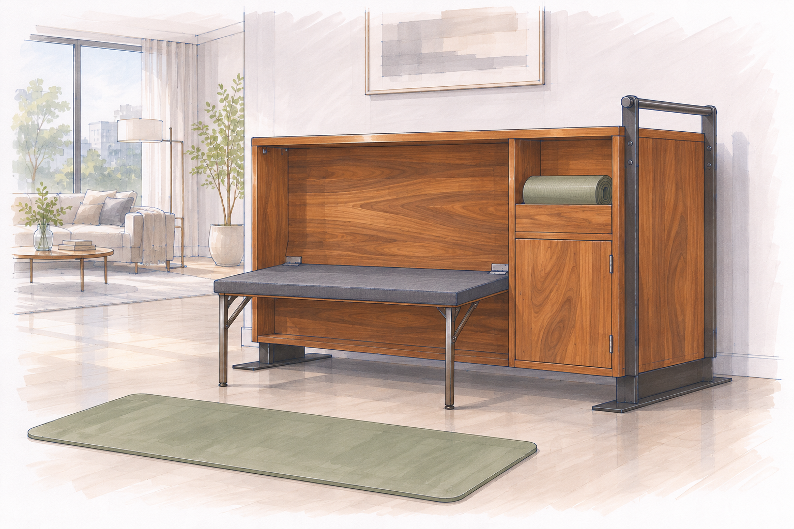

Накладка и жёсткий настил
При посадке человек касается серой накладки. Под ней лежит жёсткий настил, который передаёт усилие на раму. Накладку снимают для обслуживания.
Один ракурс от двери показывает оба предмета между занятиями. Видимое дерево, спокойные фасады и графитовые детали развивают выбранный ориентир BORK.

Сиденье всегда доступно. Свободный левый торец нужен для подхода к поручню, правый — для выдачи коврика.
Сиденье поднято между занятиями. Для раскрытия нужен пол перед фасадом, для хвата — место у правого торца.
Постоянное сиденье в гостиной. Длинная сторона обращена в комнату, оба торца доступны.

Вид сверху
Условная гостиная. Положение предметов и маршруты показаны без масштаба.
Человек встаёт лицом к короткой стороне. Между торцом и соседней мебелью должно хватить места стопам и обеим кистям.
Для посадки и приседа створки закрывают. Коврик расстилают дальше от фасада, чтобы один человек мог пройти мимо.
Узкую нишу разворачивают к свободному торцу. Если придвинуть его к дивану, коврик придётся вытаскивать наискось.
Из прежнего разбора: шесть детских и молодых движений выполняются на полу. В планировке нужна свободная площадь рядом со скамьёй.
Обвести скотчем корпус и створку. На свободном полу обозначить место стоп, край коврика и проход другого человека.
Четыре увеличенных фрагмента показывают путь от ладоней, таза и коленей до пола.
При посадке человек касается серой накладки. Под ней лежит жёсткий настил, который передаёт усилие на раму. Накладку снимают для обслуживания.
Человек подходит снаружи и кладёт обе ладони на перекладину. Так можно исследовать опору для подъёма пяток. Стопам нужно место перед нижней частью рамы.
Угол в разрезе показывает, как настил опирается на металлический профиль. Ножка передаёт усилие на пол. Видимое дерево закрывает этот узел.
За свободный край вытягивают сложенный коврик. Для опоры на колени или спину его раскладывают на полу. Веса при этом остаются на месте.
У пожилого человека два разных контакта: таз при вставании и две кисти при подъёме пяток. Это основание для отдельного сиденья и поручня.
Проверить высоту посадки, длину хвата для двух рук, место носков и доступ пальцев к коврику. Устойчивость пустой скамьи требует расчёта.
Вместо общего тяжёлого ящика предлагаю неподвижную полку за распашной дверцей.
Взрослый открывает створку на себя. Наружу движется только фасад. Пока створка открыта, её край занимает место перед скамьёй.
Кисть проходит под рукоятью. Взрослый поднимает одну гантель, соседняя остаётся в своей выемке. Проверить зазор для пальцев и выемку под реальную форму груза.
За другой дверцей лежит мягкий мешочек для детского задания. Его можно подать ребёнку, пока тяжёлый отсек закрыт. Перегородка разделяет содержимое.
После возврата веса взрослый закрывает дверцу. Ключевой замок показан как один вариант. Проверить, удобно ли им пользоваться и где семья хранит ключ.
У Technogym и Solo мы изучали отдельные места для весов. Здесь этот приём помогает увидеть, занято ли гнездо, и вернуть предмет одной рукой.
На макете сравнить распашную дверцу с прежним ящиком. Измерить наклон к рукояти и вылет створки. Возможность ограничить доступ ребёнка требует отдельной проверки.
Скамья хранит инвентарь. Взрослый готовит место, ребёнок действует на полу.
Он подходит к торцу и вытягивает коврик из ниши. Ребёнок ждёт с мягким мешочком. Отсек с гантелями остаётся закрытым.
Взрослый разворачивает коврик и расправляет край. Перед ребёнком оставляют место для руки, сбоку — для взрослого.
Из положения на четвереньках ребёнок тянется одной рукой к мешочку. Взрослый располагает предмет в пределах проверяемой досягаемости.
Ребёнок передаёт мешочек. Взрослый убирает его в лёгкий отсек и складывает коврик. Проход перед скамьёй снова свободен.
Вывод из детского движения: высота скамьи здесь ничего не добавляет. Значимы контакт ладони и коленей с полом, расположение мешочка и место взрослого.
На полноразмерной раскладке отметить границу вытянутой руки и место сопровождающего. Край коврика и мебель должны оставаться вне траектории кисти.
Сначала нужен доступ к весу, затем свободное место для приседа. Это две разные позиции тела.
Человек берёт одну гантель за рукоять. Полка остаётся внутри. Высота гнезда определяет, насколько придётся наклониться при извлечении.
У пола больше нет выступающей створки. Человек выходит на свободный участок перед скамьёй, сохраняя место для стоп и коленей.
Гантель удерживается у груди. При приседе таз и колени перемещаются относительно стоп. Скамья в этой фазе служит только ориентиром границы.
После движения человек снова подходит к отсеку, ставит вес в выемку, убирает пальцы и закрывает дверцу. На полу не остаётся груза.
Из разобранного приседа следует потребность в одной гантели и свободном полу. Постоянное сиденье сохраняется для других сценариев семьи.
Сравнить доступ к дальней и ближней гантелям. На плане отметить колени в приседе и область, которую занимает распахнутая дверца при выдаче веса.
Постоянное сиденье позволяет начать с посадки. Для второй задачи человек меняет положение относительно мебели.
Человек подходит к длинной стороне. Перед сиденьем свободен пол, обе дверцы закрыты. Коврик убирают из места постановки стоп.
Обе стопы касаются пола, таз опирается на сиденье. Здесь же можно исследовать поворот корпуса: открытые бока оставляют место локтям.
При вставании корпус подаётся вперёд, таз отрывается от сиденья. Высокий торцевой поручень расположен в стороне от этого движения.
Для подъёма пяток человек разворачивается к торцу и берётся за перекладину обеими руками. Требуется отдельная проверка хвата и места для стоп.
В описании NHS для вставания используются сиденье и стопы, а при подъёме пяток — опора обеими руками. Поэтому у мебели два разных места подхода.
До испытаний человеком проверить крепление поручня и устойчивость рамы. На геометрическом макете сверить высоту контактов и ширину разворота.
Вертикальный корпус стоит на своей раме. Сиденье открывается вперёд, инвентарь доступен сбоку от него.

Вид сверху
Условная гостиная. Положение предметов и маршруты показаны без масштаба.
Откидная часть и две передние ножки занимают место со стороны комнаты. Коврик и журнальный столик убирают из зоны подхода к сиденью.
Человек берёт вес из узкой секции или обходит шкаф к поручню. Установка в угол правой стороной перекроет этот подход.
На полу остаются ножки основания шкафа. Через них нельзя прокладывать обычный маршрут от двери к дивану.
В прошлом варианте боковые рамки мешали повороту сидя. В этой компоновке предлагаем перенести хват к наружной стороне узкой секции.
На полу разметить основание в обоих состояниях. Проверить траекторию сиденья, локти при повороте, обход к поручню и место помощника.
Четыре фрагмента последовательно объясняют движение сиденья и его опору в рабочем положении.
Пользователь или помощник удерживает внешний край и направляет панель вниз. Освободить пространство впереди нужно до раскрытия.
Ось проходит вдоль задней кромки. Сиденье поворачивается вокруг неё. Кисть остаётся на дальнем от оси крае, вне закрывающейся щели.
В рабочем положении ножки подводят опору под наружный край. Задняя сторона связана с рамой. Для посадки обе ножки должны встать на пол.
На эскизе раскос соединён с ножкой пальцем. Предлагается механически удерживать ножку и дать видимый признак зацепления. Цветная метка сама нагрузку не удерживает.
Эта трансформация нужна для посадки. Для упражнений на коврике и действий с гантелями сиденье остаётся убранным.
Разработать удержание в двух положениях, проверить каждую ножку, возможность ошибочного раскрытия и защемление пальцев. Перед нагрузкой нужны расчёт и стенд.
Четыре детали отвечают на три вопроса прошлого эскиза: куда деть подлокотники, веса и напольную базу.
При повороте сидя предплечья остаются у груди, локти движутся вместе с корпусом. От боковых рамок отказались в этой пробе, чтобы освободить их траекторию.
Для подъёма пяток человек стоит сбоку и держит поперечину обеими руками. Усилие должно передаваться на собственную раму шкафа.
Коврик и веса доступны при убранном сиденье. Тяжёлые предметы перемещены ниже прежней открытой полки. Высоту рукоятей подбирают по удобству доступа.
Металлическая стойка соединена с опорой на полу. При убранном сиденье выступ основания сохраняется. Положение стоп сверяют с его краем.
Плюс переноса поручня — свободная зона локтей. Цена решения — место справа. Человеку, которому нужна двусторонняя помощь при посадке, пригодность такой схемы предстоит проверить.
Сравнить досягаемость, подход к наружному поручню и устойчивость пустого шкафа при боковом усилии. Отдельно проверить закрывание грузового отсека.
Для этого детского действия нужен свободный коврик. Откидное сиденье можно оставить убранным.
Взрослый достаёт коврик из отдельной секции. Ребёнку не требуется открывать отсек с весами или трогать механизм сиденья.
Взрослый разворачивает коврик в сторону комнаты. Проверяет место впереди кисти и позади стопы, прежде чем ребёнок займёт исходное положение.
Ребёнок вытягивает руку и противоположную ногу. Взрослый находится сбоку. Рабочую длину задают крайние положения кисти и стопы.
Ребёнок сходит с коврика. Взрослый складывает или сворачивает покрытие по устройству ниши и возвращает его. Перед шкафом снова открыт проход.
У StepBox мы изучали отдельный коврик. Здесь отдельный доступ позволяет подготовить детское движение, сохраняя сиденье в вертикальном положении.
На раскладке обвести крайние положения руки и ноги. Оставить сбоку место взрослому. Способ складывания и размер ниши согласовать на одном образце.
Веса выдаются из узкой секции. В движении корпус шкафа остаётся за пределами досягаемости головы и таза.
Человек открывает низкую секцию и извлекает гантели из отдельных гнёзд. Сиденье остаётся поднятым. Нужно предусмотреть удобный порядок выдачи пары.
Дверцу закрывают, когда рука свободна. Человек занимает место на ровном полу с двумя гантелями. Сзади оставляют пространство для отведения таза.
В румынской тяге таз смещается назад, гантели движутся близко к ногам. Изделие обеспечивает хранение и выдачу. Нагрузка в упражнении создаётся весами.
После движения человек возвращает предметы по одному в их гнёзда. Для помещения пары понадобится свободная рука и продуманное место временной постановки.
Из разбора наклона мы взяли два требования: место для пары весов и свободный объём вокруг тела. Мотор, трос и откидное сиденье к этому движению ничего не добавляют.
Проверить цикл с лёгкими муляжами: куда поставить первую гантель, чтобы свободной рукой закрыть дверцу, и можно ли поднять пару без контакта с фасадом.
Показан сценарий с помощником. Усилие раскрытия и возможность самостоятельной подготовки ещё предстоит измерить.
Помощник держит панель за внешний край. Пожилой человек ждёт сбоку от траектории. Передняя кромка проходит через свободное пространство.
На пустом сиденье помощник осматривает две ножки и их фиксаторы. Каждое зацепление должно быть различимо без пробной посадки.
После подготовки человек садится, стопы остаются на полу. При повороте корпуса локти проходят свободно, поручень стоящего пользователя вынесен в сторону.
Человек встаёт и отходит в сторону. Помощник убирает ножки и поднимает панель. Требуется отдельное удержание панели в закрытом положении.
В старой версии низкие подлокотники пересекали предполагаемую траекторию локтей. Новая схема проверяет, даст ли их перенос место для поворота и подхода сбоку.
На макете сначала проверить ход пустого механизма и зазоры для пальцев. Поддержку при переходе и удобство сиденья оценивают после проверки конструкции.
Шесть первых движений используют пол или отдельный инвентарь. В трёх последних тело опирается на сиденье или поручень.
 Рука и противоположная нога
Рука и противоположная нога Дотянуться до мягкого предмета
Дотянуться до мягкого предмета Поднять таз лёжа
Поднять таз лёжа Сесть и встать
Сесть и встать Поднять пятки у опоры
Поднять пятки у опоры Повернуть корпус сидя
Повернуть корпус сидя